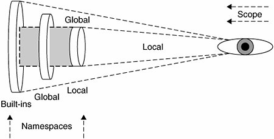

12.3. Namespaces
A namespace is a mapping of names (identifiers) to objects. The process of adding a name to a namespace consists of binding the identifier to the object (and increasing the reference count to the object by one). The Python Language Reference also includes the following definitions: "changing the mapping of a name is called rebinding [, and] removing a name is unbinding."
As briefly introduced in Chapter 11, there are either two or three active namespaces at any given time during execution. These three namespaces are the local, global, and built-ins namespaces, but local name-spaces come and go during execution, hence the "two or three" we just alluded to. The names accessible from these namespaces are dependent on their loading order, or the order in which the namespaces are brought into the system.
The Python interpreter loads the built-ins namespace first. This consists of the names in the __builtins__ module. Then the global namespace for the executing module is loaded, which then becomes the active namespace when the module begins execution. Thus we have our two active namespaces.
Core Note: __builtins__ versus __builtin__ 
| The __builtins__ module should not be confused with the __builtin__ module. The names, of course, are so similar that it tends to lead to some confusion among new Python programmers who have gotten this far. The __builtins__ module consists of a set of built-in names for the built-ins namespace. Most, if not all, of these names come from the __builtin__ module, which is a module of the built-in functions, exceptions, and other attributes. In standard Python execution, __builtins__ contains all the names from __builtin__. Python used to have a restricted execution model that allowed modification of __builtins__ where key pieces from __builtin__ were left out to create a sandbox environment. However, due its security flaws and the difficulty involved with repairing it, restricted execution is no longer supported in Python (as of 2.3). |
When a function call is made during execution, the third, a local, namespace is created. We can use the globals() and locals() built-in functions to tell us which names are in which namespaces. We will discuss both functions in more detail later on in this chapter.
12.3.1. Namespaces versus Variable Scope
Okay, now that we know what namespaces are, how do they relate to variable scope again? They seem extremely similar. The truth is, you are quite correct.
Namespaces are purely mappings between names and objects, but scope dictates how, or rather where, one can access these names based on the physical location from within your code. We illustrate the relationship between namespaces and variable scope in Figure 12-1.

Notice that each of the namespaces is a self-contained unit. But looking at the namespaces from the scoping point of view, things appear different. All names within the local namespace are within my local scope. Any name outside my local scope is in my global scope.
Also keep in mind that during the execution of the program, the local namespaces and scope are transient because function calls come and go, but the global and built-ins namespaces remain.
Our final thought to you in this section is, when it comes to namespaces, ask yourself the question, "Does it have it?" And for variable scope, ask, "Can I see it?"
12.3.2. Name Lookup, Scoping,
and Overriding
So how do scoping rules work in relationship to namespaces? It all has to do with name lookup. When accessing an attribute, the interpreter must find it in one of the three namespaces. The search begins with the local namespace. If the attribute is not found there, then the global namespace is searched. If that is also unsuccessful, the final frontier is the built-ins namespace. If the exhaustive search fails, you get the familiar:
>>> foo
Traceback (innermost last):
File "<stdin>", line 1, in ?
NameError: foo
Notice how the figure features the foremost-searched namespaces "shadowing" namespaces, which are searched afterward. This is to try to convey the effect of overriding. This shadowing effect is illustrated by the gray boxes in Figure 12-1. For example, names found in the local namespace will hide access to objects in the global or built-ins namespaces. This is the process whereby names may be taken out of scope because a more local namespace contains a name. Take a look at the following piece of code that was introduced in the previous chapter:
def foo():
print "\ncalling foo()..."
bar = 200
print "in foo(), bar is", bar
bar = 100
print "in __main__, bar is", bar
foo()
When we execute this code, we get the following output:
in __main__, bar is 100
calling foo()...
in foo(), bar is 200
The bar variable in the local namespace of foo() overrode the global bar variable. Although bar exists in the global namespace, the lookup found the one in the local namespace first, hence "overriding" the global one. For more information regarding scope, see Section 11.8 of Chapter 11.
12.3.3. Namespaces for Free!
One of Python's most useful features is the ability to get a namespace almost anywhere you need a place to put things. We have seen in the previous chapter how you can just add attributes to functions at whim (using the familiar dotted-attribute notation):
def foo():
pass
foo.__doc__ = 'Oops, forgot to add doc str above!'
foo.version = 0.2
In this chapter, we have shown how modules themselves make namespaces and how you access them in the same way:
mymodule.foo()
mymodule.version
Although we will discuss object-oriented programming (OOP) in Chapter 13, how about an example even simpler than a "Hello World!" to introduce you to Python classes?
class MyUltimatePythonStorageDevice(object):
pass
bag = MyUltimatePythonStorageDevice()
bag.x = 100
bag.y = 200
bag.version = 0.1
bag.completed = False
You can throw just about anything you want in a namespace. This use of a class (instance) is perfectly fine, and you don't even have to know much about OOP to be able to use a class! (Note: These guys are called instance attributes.) Fancy names aside, the instance is just used as a namespace.
You will see just how useful they are as you delve deeper into OOP and discover what a convenience it is during runtime just to be able to store temporary (but important) values! As stated in the final tenet of the Zen of Python:
"Namespaces are one honking great idealet's do more of those!"
(To see the complete Zen, just import the this module within the interactive interpreter.)
|